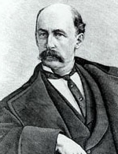

|

|

|
|
|
Daniel Henry Chamberlain was born at West Brookfield, Massachusetts, the son of
farmers. Educated at Phillips Academy at Andover, Worcester High School, and
Yale, he studied law at Harvard but left during his second year to serve as an
officer in the Fifth Massachusetts Cavalry, an African-American unit. Visiting
South Carolina in 1866 to investigate the drowning of a Yale classmate, he
settled in the Sea Islands to plant cotton.
Chamberlain, who had always sympathized with abolition, favored Congressional
Reconstruction and in 1867 was elected to the state constitutional convention.
He took so prominent a part in its deliberations that in 1868 he became Attorney
General in the administration of Governor Robert K. Scott. As the state's chief
law officer, he served on various commissions that were accused of dubious
financial transactions, and although he never broke any laws, his reputation
suffered.
In 1872, after losing the Republican nomination for Governor to the corrupt
Franklin J. Moses, he began to practice law at Columbia, only to be elected
Governor two years later. Attempting to root out corruption and extravagance, he
succeeded in winning the approbation of a number of South Carolina conservatives
who were especially pleased by his refusal to sign the commissions of two
radical judges elected by the legislature contrary to his wishes.
Because of his good record as Governor, Chamberlain hoped that in 1876 the
conservatives would endorse him. This expectation proved to be false, however.
The conservatives nominated General Wade Hampton to oppose him. In the ensuing
campaign the conservatives resorted to intimidation by Red Shirts and outright
fraud, particularly in Laurens and Edgefield counties. When the outcome was
found to hinge on the returns from those two counties, the board of canvassers
rejected them, but the state supreme court upheld the dubious votes. As a
consequence, two rival legislatures, one Republican and the other Democratic,
assembled, and both Chamberlain and Hampton were inaugurated, with the
Republicans in possession of the statehouse. Although Chamberlain had supported
Rutherford B. Hayes at the Cincinnati Convention, and the President's own
election hinged on Republican victories in the disputed states, he decided to
withdraw the federal troops from the statehouse, and the Chamberlain regime
fell.
After his abandonment by the federal government, Chamberlain moved to New
York to practice law. Becoming ever more conservative with time, he supported
the Mugwumps (conservative Republicans) and finally reestablished good relations
with his erstwhile Southern opponents. In 1886 he was appointed visiting
professor of law at Cornell and, contributing to learned publications, spent
many years in the pursuit of scholarly activities. By the end of the 1890s he
retired, returned briefly to his birthplace, traveled widely, and died at
Charlottesville, Virginia, in 1907.
Source: Hans Trefousse, Historical Dictionary of Reconstruction
(Westport, CT: Greenwood Press, 1991), 38-39.
|